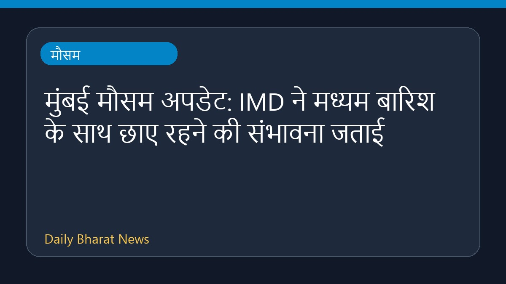

मुंबई मौसम अपडेट: IMD ने मध्यम बारिश के साथ छाए रहने की संभावना जताई

मुंबई के मौसम को लेकर नया अपडेट सामने आया है। भारत मौसम विज्ञान विभाग यानी IMD ने अपने पूर्वानुमान में शहर में बादल छाए रहने और मध्यम बारिश होने की संभावना जताई है। इस मौसमी बदलाव से शहरवासियों को स्थिति पर नजर रखने की सलाह दी जाती है। मौसम विभाग की इस ताजा जानकारी के अनुसार, आने वाले समय में बारिश का यह दौर शहर के विभिन्न हिस्सों में देखने को मिल सकता है। मौसम संबंधी अन्य विवरण और अपडेट के लिए संबंधित आधिकारिक बुलेटिन का अवलोकन किया जा सकता है। वर्तमान में उपलब्ध जानकारी इतनी ही है।
मूल स्रोत: Weather News Sources
Mumbai weather update: IMD forecasts cloudy skies with moderate rain - Mid-Day ↗
Mumbai weather update: IMD forecasts cloudy skies with moderate rain - Mid-Day ↗